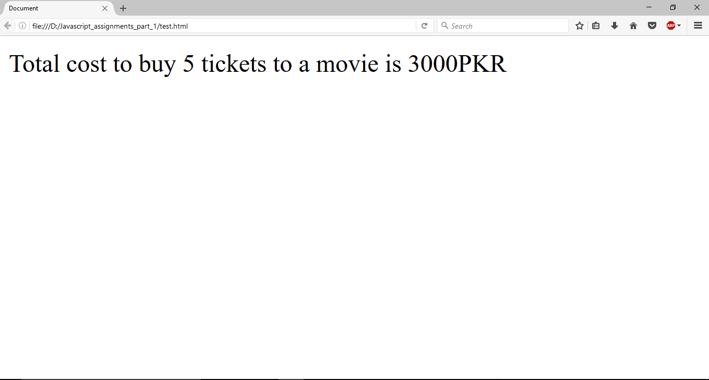

1. Write a program that take two numbers & add them in a new variable. Show the result in your browser.
2. Repeat task1 for subtraction, multiplication, division & modulus.
3. Do the following using JS Mathematic Expressions
b. Show the value of variable in your browser like “Value after variable declaration is: ??”.
a. Declare a variable.
c. Initialize the variable with some number.
d. Show the value of variable in your browser like “Initial value: 5”.
e. Increment the variable.
f. Show the value of variable in your browser like “Value after increment is: 6”.
g. Add 7 to the variable.
h. Show the value of variable in your browser like “Value after addition is: 13”.
i. Decrement the variable.
j. Show the value of variable in your browser like “Value after decrement is: 12”.
k. Show the remainder after dividing the variable’s value by 3.
l. Output : “The remainder is : 0”.
4. Cost of one movie ticket is 600 PKR. Write a script to store ticket price in a variable & calculate the cost of buying 5 tickets to a movie. Example output:
5. Write a script to display multiplication table of any number in your browser. E.g
6. The Temperature Converter: It’s hot out! Let’s make a converter based on the steps here.
a. Store a Celsius temperature into a variable.
b. Convert it to Fahrenheit & output “NNoC is NNoF”.
c. Now store a Fahrenheit temperature into a variable.
d. Convert it to Celsius & output “NNoF is NNoC”.
Conversion Formulae:
7. Write a program to implement checkout process of a shopping cart system
for an e-commerce website. Store the following in variables
a. Price of item 1
b. Price of item 2
c. Ordered quantity of item 1
d. Ordered Quantity of item 2
e. Shipping charges
Compute the total cost & show the receipt in your browser.
8. Store total marks & marks obtained by a student in 2 variables. Compute the percentage & show the result in your browser
9. Assume we have 10 US dollars & 25 Saudi Riyals. Write a script to convert the total currency to Pakistani Rupees. Perform all calculations in a single expression. (Exchange rates : 1 US Dollar = 104.80 Pakistani Rupee and 1 Saudi Riyal = 28 Pakistani Rupee)
10. Write a program to initialize a variable with some number and do arithmetic in following sequence:
a. Add 5
b. Multiply by 10
c. Divide the result by 2
Perform all calculations in a single expression
11. The Age Calculator: Forgot how old someone is? Calculate it!
a. Store the current year in a variable.
b. Store their birth year in a variable.
c. Calculate their 2 possible ages based on the stored values.
Output them to the screen like so: “They are either NN or NN years old”.
12. The Geometrizer: Calculate properties of a circle.
a. Store a radius into a variable.
b. Calculate the circumference based on the radius, and output “The circumference is NN”.
(Hint : Circumference of a circle = 2 π r , π = 3.142)
Calculate the area based on the radius, and output “The area is NN”. (Hint : Area of a circle = π r2, π = 3.142)
13. The Lifetime Supply Calculator: Ever wonder how much a “lifetime supply” of your favorite snack is? Wonder no more.
a. Store your favorite snack into a variable
b. Store your current age into a variable.
c. Store a maximum age into a variable.
d. Store an estimated amount per day (as a number).
e. Calculate how many would you eat total for the rest of your life.
Output the result to the screen like so: “You will need NNNN to last you until the ripe old age of NN”.